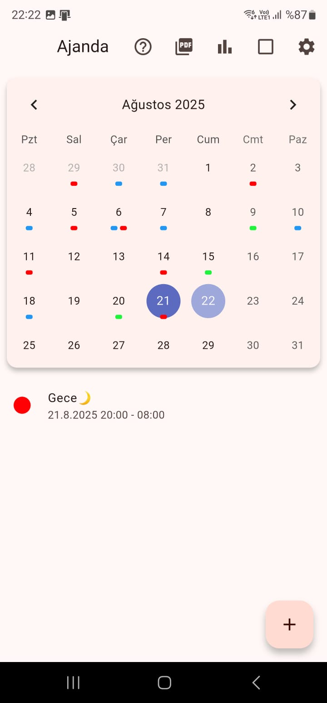
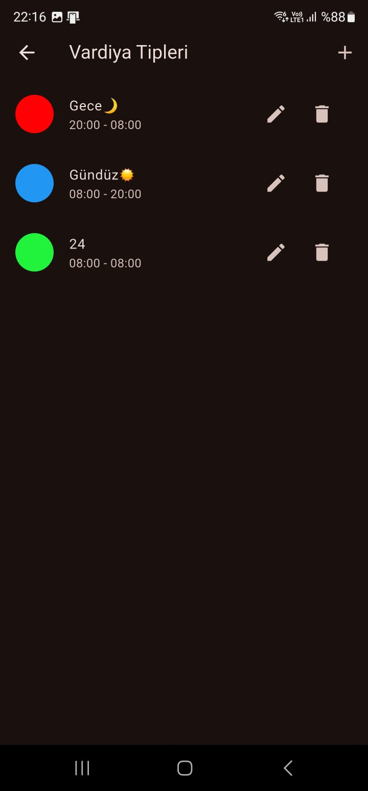

Manage Your Shifts and Work List Easily!
Hemen İndirin
Nöbetlerinizi ve görevlerinizi net ve düzenli bir takvim görünümünde kolayca görüntüleyin.
Tekli veya toplu nöbet ekleme, düzenleme ve silme işlemleriyle programınızı anında güncelleyin.
Kendi vardiya tiplerinizi (örneğin, Gündüz, Gece, İzin) renk, isim ve saat aralıklarıyla kişiselleştirin.
Önemli nöbetleri asla kaçırmayın! Vardiya başlangıcından önce ayarlanabilir alarmlarla zamanında bildirim alın. Hangi vardiya tipleri için alarm kurulacağını seçin.
Aylık nöbet sayılarınızı ve toplam çalışma saatlerinizi vardiya tiplerine göre görüntüleyerek programınız hakkında değerli bilgiler edinin.
Takvim ve nöbet bilgilerinizi kolayca PDF olarak dışa aktarın. Raporlarınızı özelleştirin ve paylaşın.
Uygulamayı tercih ettiğiniz dilde kullanın.
Göz yorgunluğunu azaltmak ve pil ömründen tasarruf etmek için karanlık modu etkinleştirin.
Basit ve anlaşılır tasarımı sayesinde uygulamayı kolayca kullanmaya başlayın.
Uygulamamızı App Store ve Google Play'den ücretsiz olarak indirebilirsiniz.
App Store Google Play